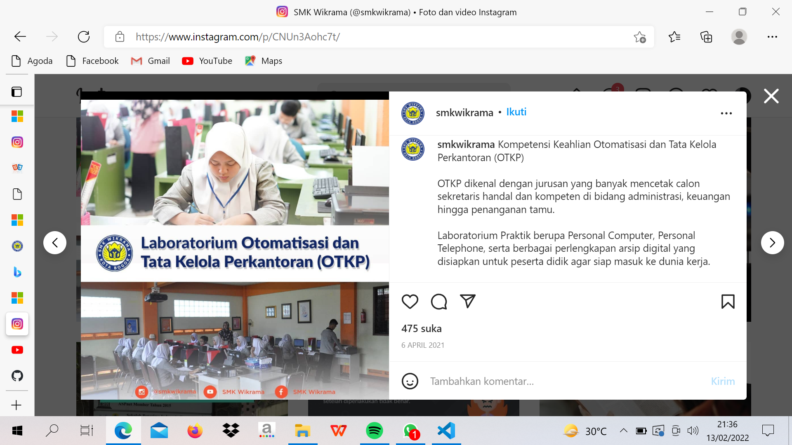
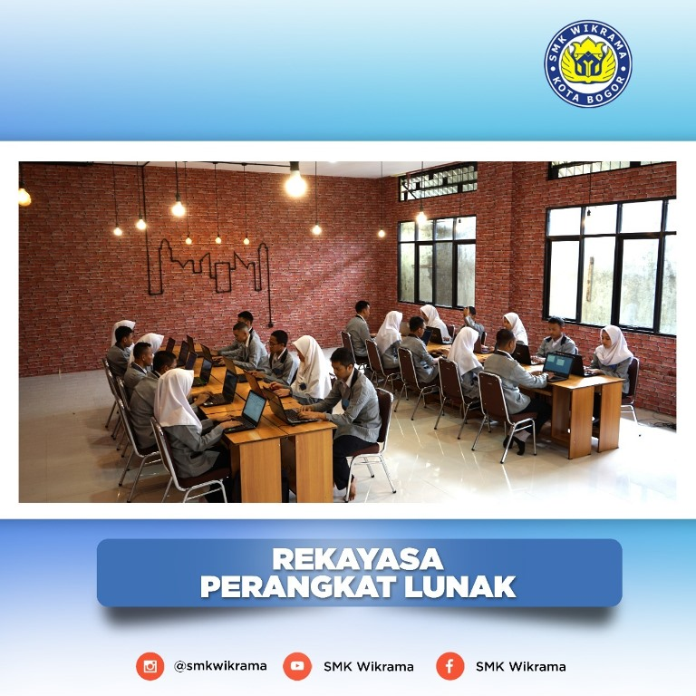
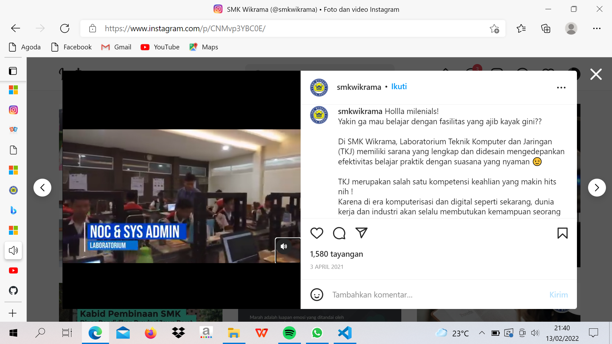

JURUSAN
JURUSAN APA SAJA YG ADA DI WIKRAMA BOGOR ?
Jaman sekarang tidak asing lagi, banyak siswa/siswi yang memilih melanjutkan ke jenjang pendidikannya ke SMK (Sekolah Menengah Kejuruan), Antara lain alasanya adalah untuk cepat mencari kerja, Karena itulah banyak anak-anak penerus bangsa yang memilih jenjang pendidikannya ke SMK.1. APK (Administrasi Perkantoran)
dministrasi Kantor adalah kegiatan sehari-hari yang berfokus pada perencanaan anggaran keuangan, pembayaran dan pendataan suatu perkantoran atau perusahaan. Administrasi kantor bertanggung jawab atas merencanakan kegiatan kantor, menyediakan peralatan kantor, mengatur perubahan antar departemen, seta membantu tugas manajemen senior untuk menggaji dan memecat karyawan. Kebanyakan jurusan ini di pilih oleh wanita, tetapi yang laki-laki juga ada.
2. PMN (Pemasaran)

Marketing memperlajari tentang cara mempromosikan barang dan jasa kepada beragam pelanggan dan berfokus pada periklanan dan penjualan. Dengan perkembangan teknologi saat ini, diberengi dengan meningkatnya popularitas situs media sosial, seperti Facebook, Twitter, Instagram, dan YouTube, dunia marketing sekarang ini sedang mengalami perubahan dramatis. Tentunya jurusan pemasaran di SMK Wikrama berbasis IT/ Teknologi, Semua di lakukan dengan berbasis IT.
3. RPL (Rekayasa Perangkat Lunak)
RPL adalah jurusan / bidang keahlian yang mempelajari bagaimana cara-cara pengembangan perangkat lunak. Biasanya jurusan ini di kuasai oleh orang-orang yang berpikir lebih dalam arti cerdas, Karena jurusan ini adalah jurusan yang paling bermain Logika.
4.TKJ (Teknik Komputer & Jaringan)
Jurusan TKJ (Teknik Komputer dan Jaringan) adalah suatu jurusan yang terdapat di SMK/STM yang mempelajari seluk-beluk dunia komputer dan jaringan komputer, mulai dari cara instalasi SO (Sistem Operasi), menangani masalah pada PC, memperbaiki PC, membuat jaringan LAN atau yang lainnya, membuat WEB, dan masih banyak lagi. Biasanya jurusan ini di pilih oleh kalangan pria, BTW Jurusan ini yang biasanya paling kompak. Bukan berarti jurusan yang lainnya engga kompak yaa.
5. MMD (Multimedia)

Multimedia adalah suatu jurusan yang mempelajari tentang dunia media seperti; Camera, Fotografi, Membuat Film, dan sebagainya. Jurusan ini cocok untuk yang suka foto-foto, Buat film, Dan sebagainya yang berhubunga dengan media. Konon katanya jurusan ini adalah jurusan yang mahal, Karena selain membutuhkan kamera yang mempunyai resolusi tinggi, Kita juga harus mempunya spek-spek alat yang harganya lumayan tinggi,agar hasil dari kualitas tersebut bagus.
DLL